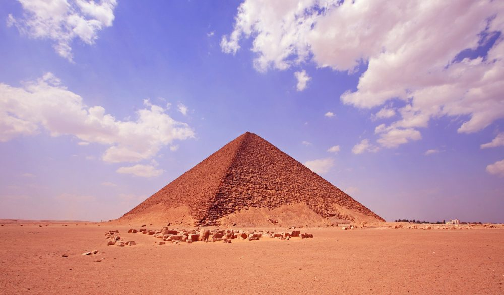

Dahshur Pyramids

The royal necropolis of Dahshur, located south of Saqqara, is home to the Bent Pyramid and the Red Pyramid, both built by the founding pharaoh of the 4th Dynasty, Sneferu. These structures are profoundly important as they document the crucial architectural transition from the stepped pyramids of the 3rd Dynasty to the smooth-sided, "true" pyramids seen at Giza. Dahshur offers a quieter, less commercialized experience compared to the Giza plateau, allowing for a more intimate exploration of these colossal monuments. The Bent Pyramid is famous for its distinct, altered angle; halfway up, the builders realized the slope was too steep and unstable, forcing them to reduce the angle to prevent collapse, resulting in its unique "bent" appearance. Learning from this near-disaster, Sneferu's engineers immediately began the Red Pyramid—named for the reddish hue of its exposed limestone core—which successfully became the world's first successful smooth-sided true pyramid.
| Location | Ticket Price (Foreign Tourist) | Visiting Hours |
|---|---|---|
| Dahshur, Giza | Adult: 200 EGP Student: 100 EGP | 8:00 AM – 4:00 PM |